STENLÄGGNING
Vi erbjuder professionell stenläggning för gångvägar, uppfarter och uteplatser. Med hållbara material och noggrant utförande skapar vi ytor som är både funktionella och estetiskt tilltalande. Vårt arbete kombinerar styrka och design, så att resultatet håller och ser bra ut år efter år.
 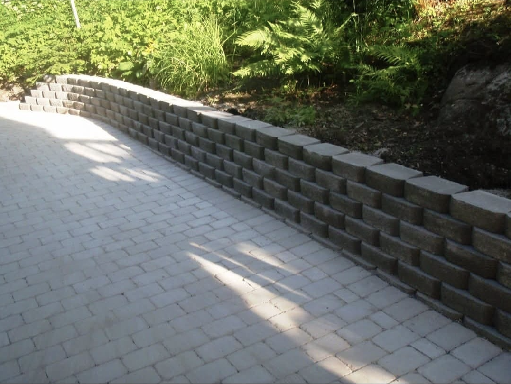
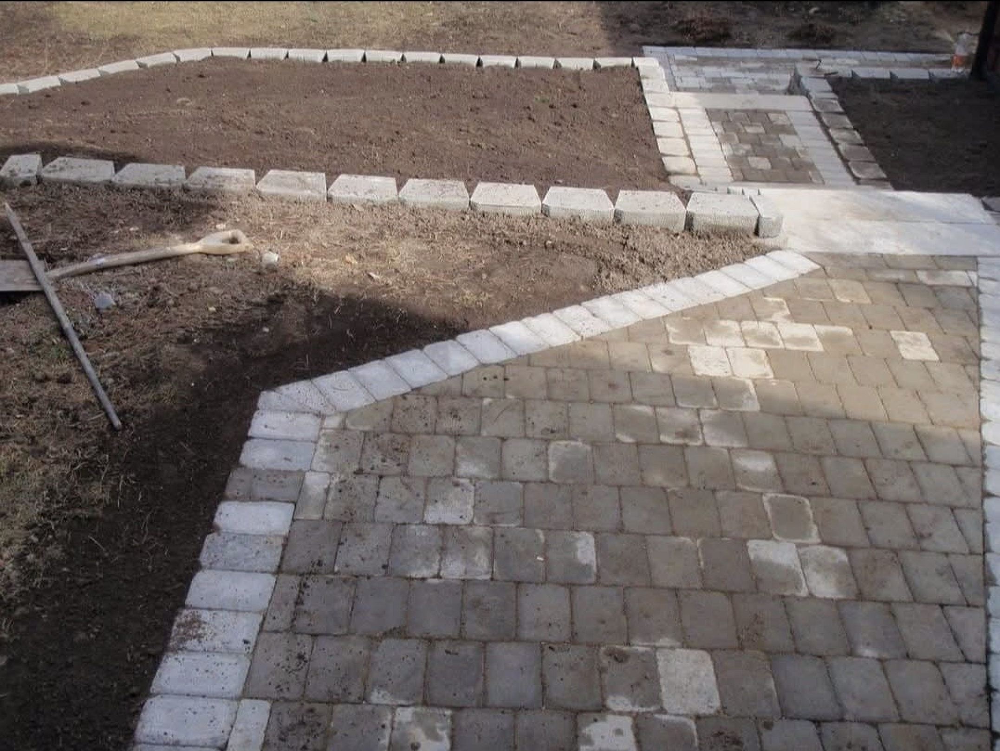
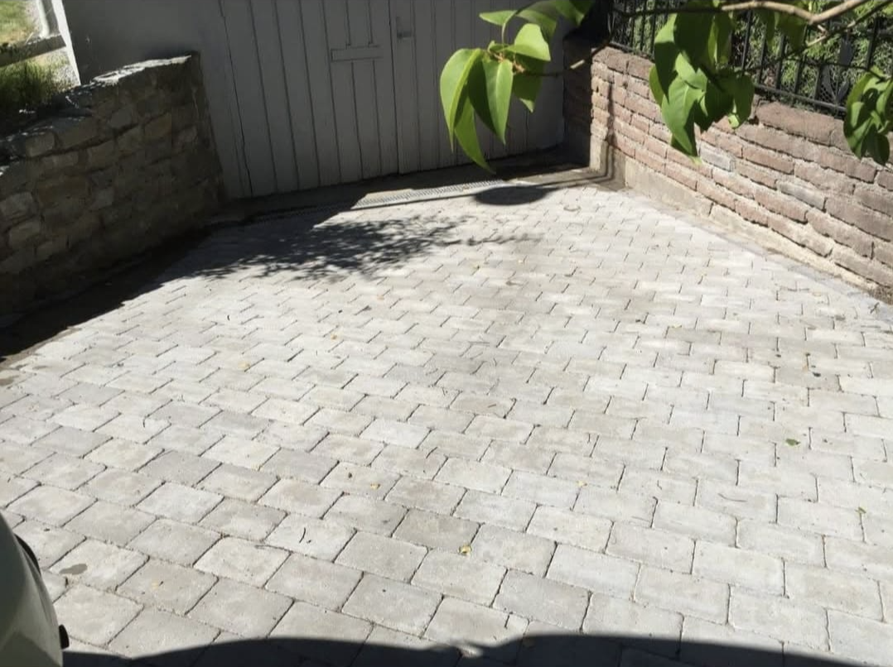
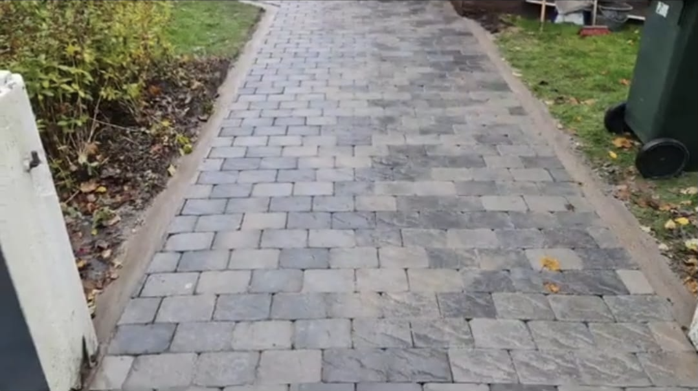
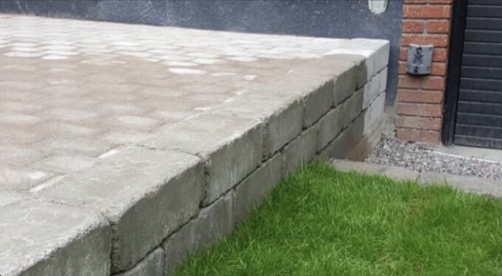
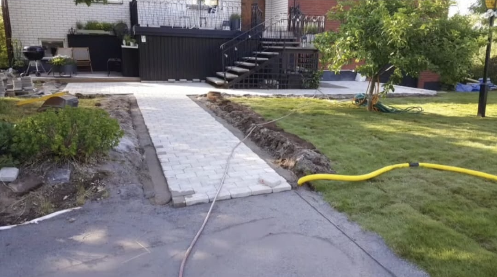
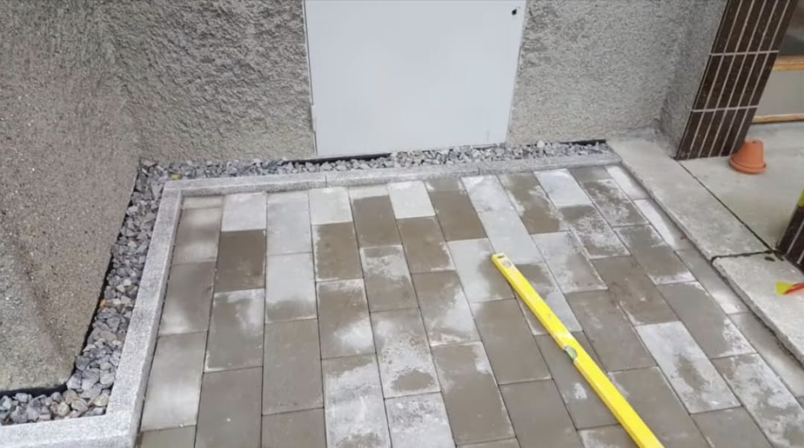
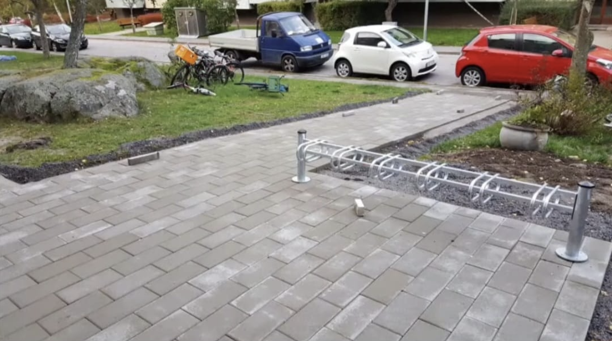
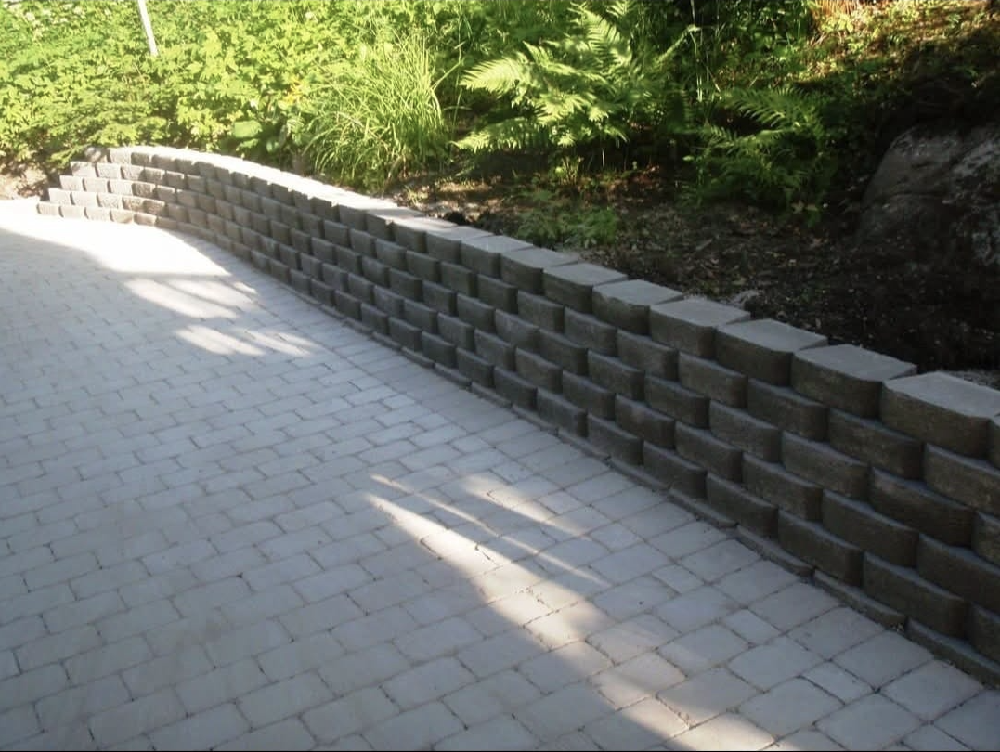
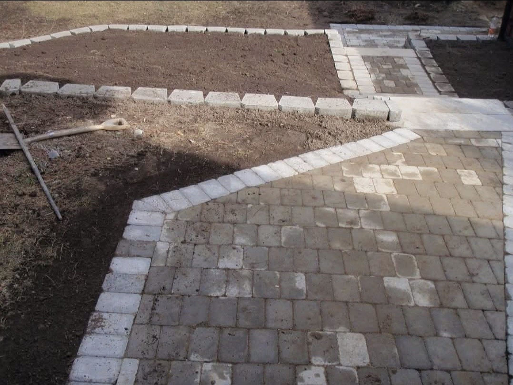
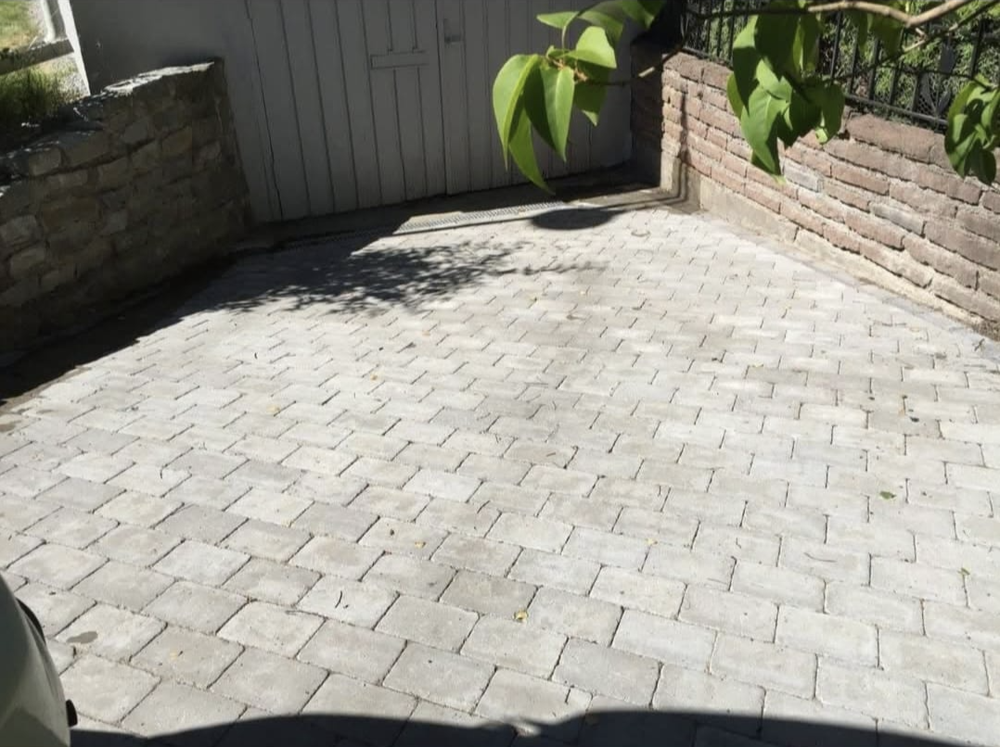
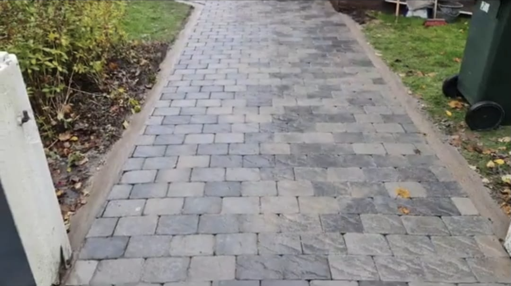
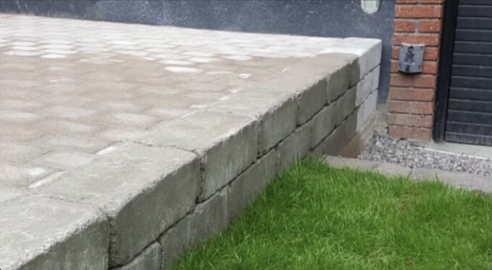
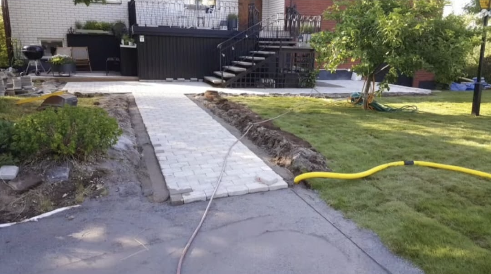
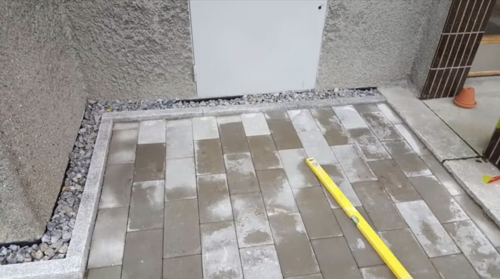
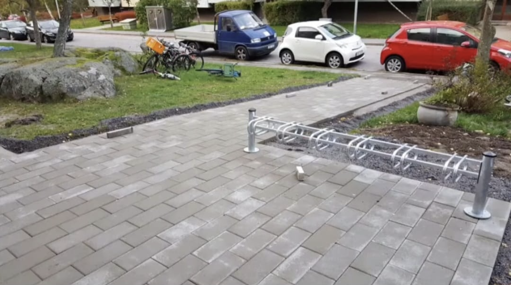

MURLÄGGNING
Vi bygger murar i betong, natursten och tegel som är både stabila och snygga. Oavsett om det gäller stödmurar, avgränsningar eller dekorativa inslag, ser vi till att de blir hållbara, jämna och väl anpassade till omgivningen. Varje mur utförs med fokus på styrka, precision och en finish som lyfter helheten.
GRÄSLÄGGNING
Vi lägger rullgräs och sår gräsmattor med högkvalitativt gräs för ett jämnt och slitstarkt resultat. Från förberedelse av marken till färdig gräsyta, ser vi till att varje steg utförs noggrant för att ge dig en grön och inbjudande trädgård som håller länge.
TRAPPBYGGE
Vi bygger och installerar trappor i sten, betong och trä som kombinerar funktion, säkerhet och stil. Med noggrant val av material och precision i utförandet skapar vi trappor som är bekväma att använda och passar perfekt in i miljön runt omkring.
ALTANBYGGE
Vi bygger altaner och trädäck som både är praktiska och estetiskt tilltalande. Varje altan utformas och byggs för att passa din tomt, dina behov och din stil, med material som tål väder och vind. Resultatet blir en hållbar och inbjudande uteplats att njuta av i många år framöver.